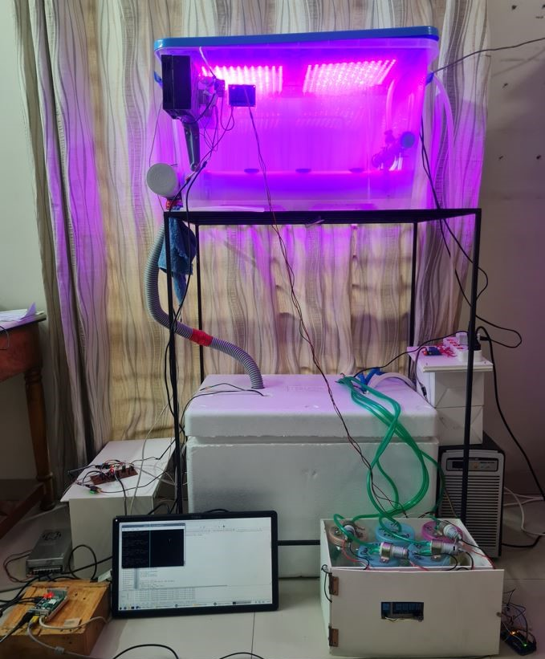
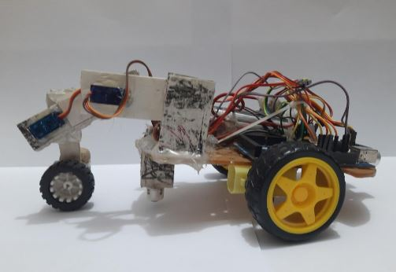

MD Sameer Iqbal Chowdhury
Ph.D. Student
Department of Computer Science
Texas State University
Advised by Dr. Tsz-Chiu Au
My current research focuses on AI for autonomous navigation and exploration: enabling robots to perceive, plan, and move reliably through unknown and changing environments. I am also interested in vision-language models for robotics, robotic manipulation, multimodal sensing, and resilient physical AI systems.
Breaking news!
- Our paper on assessing vision-language models for failure detection in robotic manipulation is in press at IEEE Pulse, 2026.
- I received the Best Poster Award at the 2nd Annual IEEE LSS EMB Workshop on AI and Healthcare, 2025.
- I placed 2nd in the Texas State University Capture The Flag competition conducted by EC-Council, 2025.
- I joined Texas State University as a Ph.D. student and Graduate Research Assistant in August 2025.
Research
I work on AI for autonomous navigation and exploration. My goal is to build robots that can map, reason about, and explore unfamiliar environments safely and efficiently, combining learning-based perception with planning so that they hold up under noisy, real-world conditions.
Previously, I studied how vision-language models can detect failures in robotic manipulation, benchmarking edge-deployable models such as Moondream2 and SmolVLM against larger models such as Qwen-2-VL 7B and Florence-2.
Selected Publications
- MD Sameer Iqbal Chowdhury and Tsz-Chiu Au. Assessing Vision-Language Models for Failure Detection in Robotic Manipulation. IEEE Pulse, 2026. In press. [doi]
- MD Sameer Iqbal Chowdhury, Mikdam-Al-Maad Ronoue, Md Asaduzzaman, and Lafifa Jamal. Design of an IoT-enabled Scalable Closed Hydroponics System with Intelligent Parameter Control and Persistent Sensing Error Resilience. Smart Agricultural Technology. Under review. [preprint]
- Ipshita Ahmed Moon, Humayra Rashid, Safayat Hasan, MD Sameer Iqbal Chowdhury, Shifat-E-Arman, and Lafifa Jamal. Exploring the Efficacy of NAO Robot as a Language Instructor. In Proceedings of the 10th International Conference on Robotics and Artificial Intelligence, 2024. Equal contribution. [doi]
Selected Projects
-
IoT-enabled Scalable Closed Hydroponics System. An automated hydroponics system with pH, EC, CO2, humidity, and temperature monitoring, built on Arduino-based sensor nodes with a live web dashboard, XGBoost-based control decisions, and a persistent sensing error-resilience algorithm. Funded by an ICT Innovation Fund grant from Bangladesh's ICT Division, where I served as Co-PI. Experiments showed a 78–288% improvement in fresh mass yield over conventional techniques.
- Selected publication: Design of an IoT-enabled Scalable Closed Hydroponics System. Under review.

-
2-DOF Single Claw Crawler Bot using Q-learning. A two degree-of-freedom crawler robot that learns its own gait: Q-learning with epsilon-greedy exploration optimizes servo-angle sequences for maximum displacement.

Education
- Ph.D., Computer Science, Texas State University, August 2025–present.
Advisor: Dr. Tsz-Chiu Au. - B.Sc., Robotics and Mechatronics Engineering, University of Dhaka, 2019–2024.
Thesis: Design of an IoT-enabled Scalable Closed Hydroponics System with Smart Parameter Control.
Honors and Awards
- Best Poster Award, 2nd Annual IEEE LSS EMB Workshop on AI and Healthcare, 2025.
- 2nd Place, Texas State University Capture The Flag competition conducted by EC-Council, 2025.
- ICT Innovation Fund Grant, Ministry of Posts, Telecommunications and Information Technology, Bangladesh, 2023–2024.
- Highest Mark in Country, Economics, Cambridge Assessment International Examinations, 2018.
- The Daily Star Award for outstanding A Level and O Level performance, 2019 and 2017.
Teaching Experience
- Doctoral Instructional Assistant, CS 2308: Foundations of Computer Science II, Texas State University, August 2025–present (two sections, 140+ students).
Leadership and Service
- Chair, IEEE Robotics & Automation Society, University of Dhaka Student Branch Chapter, 2023–2024. Organized 10+ workshops and industry talks for 200+ students.
- Mentor, Bangladesh Robot Olympiad, 2019–2022. Ran robotics workshops in 15+ high schools and helped organize national rounds for 1000+ participants.
Technical Skills
Python, C/C++, MATLAB; PyTorch, TensorFlow, YOLO, ROS/ROS2; NVIDIA Jetson, Arduino, Raspberry Pi; Git, Docker, LaTeX, SolidWorks.
Contact Information
- Email: vsj23@txstate.edu
- Address: Department of Computer Science, Texas State University, 601 University Drive, San Marcos, TX 78666